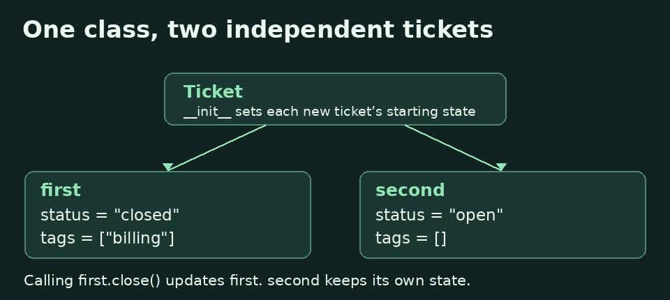

Object-Oriented Programming
A support team needs to open tickets, update each ticket independently and tell someone when a new ticket arrives. You’ll build those pieces around one Ticket class. If you need a refresher on lists or references, see names, references and mutation.
Start with two tickets · Protect ticket status · Connect a notifier · Runnable tricky questions · Build the service
Save the first example as support_tickets.py in your practice folder. Run it with uv run python support_tickets.py, or use the plain Python command from setup. Each example tells you whether to replace the file or append code.
Create two independent tickets
A class defines what its objects can do and how they start. An instance is one object made from that class. An attribute is a named value on an object, such as first.title. Python calls __init__ to initialize the new object after creating it.
Before running the code, predict which ticket gets the tag.
class Ticket:
def __init__(self, title):
self.title = title
self.status = "open"
self.tags = []
first = Ticket("Refund")
second = Ticket("Delivery")
first.tags.append("billing")
print(first.title, first.tags)
print(second.title, second.tags)Expected output
Refund ['billing']
Delivery []Each call to Ticket(...) runs __init__ for a different object. Python passes that object as self. Each execution of self.tags = [] creates a fresh list. If you put tags = [] on the class itself, instances can end up sharing it.
Checkpoint. Add one tag to the second ticket and confirm that the first still contains only billing.
Use a method to change one ticket
A method is a function defined on a class. When you call first.close(), Python supplies first as self. That’s why the method updates the first ticket. Replace the previous file with this version.
class Ticket:
def __init__(self, title):
self.title = title
self.status = "open"
self.tags = []
def close(self):
self.status = "closed"
first = Ticket("Refund")
second = Ticket("Delivery")
first.tags.append("billing")
first.close()
print(first.status, first.tags)
print(second.status, second.tags)Expected output
closed ['billing']
open []
self is changed.close() changes state and reaches the end without returning a value, so the call returns None. To check that it worked, read the ticket’s status.
Give the ticket one way to change status
Encapsulation means giving callers a clear way to use the object and putting the rule for changing its state in one place. Here every ticket starts open and can be closed. Calling close() twice has the same final effect as calling it once.
Replace the file with this version. @property lets the caller read ticket.status like an attribute while Python calls the getter method.
class Ticket:
def __init__(self, title):
self.title = title
self._status = "open"
self.tags = []
@property
def status(self):
return self._status
def close(self):
self._status = "closed"
ticket = Ticket("Refund")
print(ticket.status)
ticket.close()
ticket.close()
print(ticket.status)Expected output
open
closedThere’s no setter, so assigning to ticket.status raises AttributeError. The leading underscore on _status signals internal use. Python still allows direct access to _status, so the underscore is a convention.
Checkpoint. Try ticket.status = "open" on a copy of the file. Explain why calling a method keeps the rule in one place.
Give the service a notifier it can swap
A ticket stores its own state. A service can create tickets and decide when to send a message. Composition lets the service use another object to do that work. Pass the notifier into TicketService(...) so the service can use a real notifier later or a recording one in a test. Passing it in is called dependency injection.
Append the following after the previous example. It uses the Ticket class you already defined. The output below shows the two new lines.
class RecordingNotifier:
def __init__(self):
self.messages = []
def send(self, title):
self.messages.append(title)
class TicketService:
def __init__(self, notifier):
self.notifier = notifier
def create(self, title):
ticket = Ticket(title)
self.notifier.send(ticket.title)
return ticket
notifier = RecordingNotifier()
service = TicketService(notifier)
ticket = service.create("Refund")
print(ticket.title, ticket.status)
print(notifier.messages)Expected output
Refund open
['Refund']The service can use any notifier that supplies send(title) with the expected behavior. The recording notifier gives you a way to verify the title without sending a real message.
When does inheritance fit?
Inheritance lets a subclass use or override behavior from a parent class. Use it when the subclass can stand in for its parent. Here a specialized console notifier still accepts the same send(title) call. super() looks for the next implementation in the class hierarchy.
class ConsoleNotifier:
def send(self, title):
print(title)
class PrefixedNotifier(ConsoleNotifier):
def send(self, title):
super().send(f"[Support] {title}")
PrefixedNotifier().send("Refund")Expected output
[Support] RefundUse a dataclass for a summary
A lightweight dataclass works well for a record that mainly holds values, such as a report row. Python generates methods including an initializer and a readable representation from the declared fields. The application’s Ticket class still owns the rule for closing a ticket. Try this example separately.
from dataclasses import dataclass, field
@dataclass
class TicketSummary:
title: str
tags: list[str] = field(default_factory=list)
first = TicketSummary("Refund")
second = TicketSummary("Delivery")
first.tags.append("billing")
print(first)
print(second.tags)Expected output
TicketSummary(title='Refund', tags=['billing'])
[]field(default_factory=list) calls list() for every summary that omits its tags. The annotations describe the expected types. They don’t enforce those types at runtime. A frozen dataclass blocks ordinary field assignment, but an object stored in a field can still be mutable.
Tricky OOP questions you can run
Predict the exact output or error before you run each example.
Why do both tickets get the tag?
class Ticket:
tags = []
first = Ticket()
second = Ticket()
first.tags.append("urgent")
print(second.tags)Show answer
It prints ['urgent']. Both instances look up the same class-level list. Use self.tags = [] inside __init__ for one list per instance.
Why is closing printed as None?
class Ticket:
def close(self):
self.status = "closed"
ticket = Ticket()
print(ticket.close())
print(ticket.status)Show answer
It prints None and then closed. The method changes the object and has no explicit return.
Does another name create another object?
class Ticket:
pass
first = Ticket()
alias = first
alias.status = "closed"
print(first.status)
print(first is alias)Show answer
It prints closed and True. Assignment binds a second name to the same object. Call Ticket() again to create another instance.
Why does assigning the property fail?
class Ticket:
@property
def status(self):
return "open"
ticket = Ticket()
ticket.status = "closed"Show answer
The last line raises AttributeError. The property has a getter and no setter.
Can two different classes work with the same service?
class Recorder:
def send(self, title):
return f"recorded {title}"
class Preview:
def send(self, title):
return f"preview {title}"
def notify(provider):
return provider.send("Refund")
print(notify(Recorder()))
print(notify(Preview()))Show answer
It prints recorded Refund and preview Refund. Both objects offer the method the caller needs. Neither has to inherit from the other.
Does frozen stop a nested list from changing?
from dataclasses import dataclass, field
@dataclass(frozen=True)
class Summary:
tags: list[str] = field(default_factory=list)
row = Summary()
row.tags.append("urgent")
print(row.tags)Show answer
It prints ['urgent']. Appending modifies the list itself. Assigning a new list to row.tags is what the frozen dataclass would reject.
Close one ticket without changing another
Using the ticket class above, create two tickets, close only the first and add a tag to it. Before running your solution, predict the second ticket’s status and tags.
Show the check
first = Ticket("Refund")
second = Ticket("Delivery")
first.close()
first.tags.append("billing")
assert first.status == "closed"
assert second.status == "open"
assert second.tags == []Run the check below the ticket class. If both tickets gain a tag, look for a list on the class or two names that refer to the same ticket.
Swap the notifier and check the service
With Ticket, RecordingNotifier and TicketService defined, create two tickets. Check that the service returns independent tickets and the notifier records both titles in order. Then swap in ConsoleNotifier from the inheritance example. Keep the service code as it is.
Show the check
notifier = RecordingNotifier()
service = TicketService(notifier)
first = service.create("Refund")
second = service.create("Delivery")
first.close()
assert second.status == "open"
assert notifier.messages == ["Refund", "Delivery"]The assertions check object state and what the service asked its dependency to do.
Try the design in a bootcamp project
Choose a project and try the prompt. Open Worked solution to see the runnable code, what each line does and the output. Run each solution in a fresh file.
OmniGuard
Model a connector and pass a fake health checker to the service. Verify that checking one connector leaves a second connector’s status alone.
Worked solution
Run the code
from dataclasses import dataclass
@dataclass
class Connector:
name: str
status: str = "unchecked"
class FakeHealthChecker:
def check(self, name):
return name == "CRM"
def refresh(connector, checker):
connector.status = "healthy" if checker.check(connector.name) else "down"
crm = Connector("CRM")
billing = Connector("Billing")
refresh(crm, FakeHealthChecker())
assert (crm.status, billing.status) == ("healthy", "unchecked")
print(crm.status, billing.status)Terminal output
healthy uncheckedLine-by-line explanation
from dataclasses import dataclassImport the decorator that builds an initializer from fields.
@dataclassGenerate the initializer for the connector record.
class Connector:Define the state of one connector.
name: strStore the connector name that gets sent to the checker.
status: str = "unchecked"Start each connector with its own status.
class FakeHealthChecker:Supply a deterministic checker for this exercise.
def check(self, name):Accept the same name a real checker would accept.
return name == "CRM"Treat CRM as healthy without touching the network.
def refresh(connector, checker):Take both the target and the replaceable checker explicitly.
connector.status = "healthy" if checker.check(connector.name) else "down"Change only the connector passed to this call.
crm = Connector("CRM")Create the target connector.
billing = Connector("Billing")Create another connector with separate state.
refresh(crm, FakeHealthChecker())Check just CRM using the fake.
assert (crm.status, billing.status) == ("healthy", "unchecked")Fail the exercise if Billing was changed.
print(crm.status, billing.status)Display the two states side by side.
AuditMesh
Model one review and inject an audit sink. Verify that recording a decision produces exactly one entry with the review ID.
Worked solution
Run the code
from dataclasses import dataclass
@dataclass
class Review:
id: str
decision: str
class RecordingAuditSink:
def __init__(self):
self.entries = []
def record(self, review_id, decision):
self.entries.append((review_id, decision))
def record_decision(review, sink):
sink.record(review.id, review.decision)
sink = RecordingAuditSink()
record_decision(Review("007", "approved"), sink)
assert sink.entries == [("007", "approved")]
print(sink.entries)Terminal output
[('007', 'approved')]Line-by-line explanation
from dataclasses import dataclassImport the decorator used to declare a review record.
@dataclassBuild an initializer for the review fields.
class Review:Group one review ID with its decision.
id: strKeep leading zeros by storing the ID as text.
decision: strStore the result to write to the audit sink.
class RecordingAuditSink:Make a sink that records events in memory.
def __init__(self):Set up each sink when it is created.
self.entries = []Give this sink a fresh event list.
def record(self, review_id, decision):Define the operation the service needs.
self.entries.append((review_id, decision))Save the arguments together as one event.
def record_decision(review, sink):Pass the review and collaborator into the operation.
sink.record(review.id, review.decision)Forward exactly one event through the sink's public method.
sink = RecordingAuditSink()Select the recorder as the sink for this run.
record_decision(Review("007", "approved"), sink)Record one decision for review 007.
assert sink.entries == [("007", "approved")]Check the event count and both field values.
print(sink.entries)Display the captured event.
Self-hosted LLM
Model a model configuration record with a dataclass. Create two configurations and verify their stop-token lists are independent.
Worked solution
Run the code
from dataclasses import dataclass, field
@dataclass
class ModelConfig:
name: str
stop_tokens: list[str] = field(default_factory=list)
first = ModelConfig("small")
second = ModelConfig("large")
first.stop_tokens.append("END")
assert first.stop_tokens is not second.stop_tokens
assert second.stop_tokens == []
print(first.stop_tokens, second.stop_tokens)Terminal output
['END'] []Line-by-line explanation
from dataclasses import dataclass, fieldImport the record decorator and the helper for mutable defaults.
@dataclassGenerate an initializer from the field annotations.
class ModelConfig:Describe one model's configuration.
name: strGive the configuration a readable model name.
stop_tokens: list[str] = field(default_factory=list)Create an independent list when no list is supplied.
first = ModelConfig("small")Create a configuration with an empty stop-token list.
second = ModelConfig("large")Create another configuration with a different list.
first.stop_tokens.append("END")Modify only the first model's list.
assert first.stop_tokens is not second.stop_tokensVerify the lists are separate objects.
assert second.stop_tokens == []Confirm the second configuration stayed empty.
print(first.stop_tokens, second.stop_tokens)Show the two lists after the edit.
On-device LLM
Give the inference runner a replaceable backend. Use a fake backend to verify the prompt reaches it without loading a model.
Worked solution
Run the code
class RecordingBackend:
def __init__(self):
self.prompts = []
def generate(self, prompt):
self.prompts.append(prompt)
return "Draft from fake"
class InferenceRunner:
def __init__(self, backend):
self.backend = backend
def run(self, prompt):
return self.backend.generate(prompt)
backend = RecordingBackend()
runner = InferenceRunner(backend)
draft = runner.run("Summarize the note")
assert backend.prompts == ["Summarize the note"]
print(draft)Terminal output
Draft from fakeLine-by-line explanation
class RecordingBackend:Create an inference substitute without loading a model.
def __init__(self):Initialize one backend instance.
self.prompts = []Keep a separate record of the prompts it receives.
def generate(self, prompt):Use the method the inference runner expects.
self.prompts.append(prompt)Capture the request for an assertion.
return "Draft from fake"Return a predictable response.
class InferenceRunner:Put the inference entry point behind one class.
def __init__(self, backend):Accept the backend as a dependency.
self.backend = backendStore it for future calls.
def run(self, prompt):Give the caller a method to start inference.
return self.backend.generate(prompt)Forward the prompt and return the backend result.
backend = RecordingBackend()Choose the fake implementation.
runner = InferenceRunner(backend)Inject it into the runner.
draft = runner.run("Summarize the note")Send one prompt through the public method.
assert backend.prompts == ["Summarize the note"]Check that the intended prompt reached the backend once.
print(draft)Show the response returned to the caller.
Multimodal document intelligence
Give an ingestion service a parser object. Swap a PDF parser for a fake parser with the same method and compare the returned summary.
Worked solution
Run the code
class PdfParser:
def parse(self, source):
assert source.endswith(".pdf")
return ["Invoice 0042", "Total 10 EUR"]
class FakeParser:
def parse(self, source):
return ["Fixture invoice"]
class IngestionService:
def __init__(self, parser):
self.parser = parser
def summarize(self, source):
lines = self.parser.parse(source)
return f"{len(lines)} lines | {lines[0]}"
pdf_summary = IngestionService(PdfParser()).summarize("invoice.pdf")
fake_summary = IngestionService(FakeParser()).summarize("invoice.pdf")
assert (pdf_summary, fake_summary) == ("2 lines | Invoice 0042", "1 lines | Fixture invoice")
print(pdf_summary)
print(fake_summary)Terminal output
2 lines | Invoice 0042
1 lines | Fixture invoiceLine-by-line explanation
class PdfParser:Model the interface a real PDF parser adapter might offer.
def parse(self, source):Accept the document path through the common method.
assert source.endswith(".pdf")Check the path in this local fixture.
return ["Invoice 0042", "Total 10 EUR"]Supply sample text for the exercise without opening a PDF.
class FakeParser:Offer a second implementation for the same service.
def parse(self, source):Match the parser call used by the service.
return ["Fixture invoice"]Keep the fake input small and predictable.
class IngestionService:Own the summary rule while delegating parsing.
def __init__(self, parser):Receive the caller's choice of parser.
self.parser = parserStore the dependency on this service instance.
def summarize(self, source):Expose one entry point for building a summary.
lines = self.parser.parse(source)Ask the injected parser for text lines.
return f"{len(lines)} lines | {lines[0]}"Summarize the nonempty fixture returned by either parser.
pdf_summary = IngestionService(PdfParser()).summarize("invoice.pdf")Run through the sample PDF adapter.
fake_summary = IngestionService(FakeParser()).summarize("invoice.pdf")Swap only the parser and run the same operation.
assert (pdf_summary, fake_summary) == ("2 lines | Invoice 0042", "1 lines | Fixture invoice")Verify that the summary follows each parser's result.
print(pdf_summary)Show the result from the sample adapter.
print(fake_summary)Show the result after swapping in the fake.
Enterprise lead management
Model a lead with a controlled state change. Record a contact on one lead and confirm another lead’s state stays unchanged.
Worked solution
Run the code
class Lead:
def __init__(self, name):
self.name = name
self._status = "new"
@property
def status(self):
return self._status
def record_contact(self):
self._status = "contacted"
first = Lead("Northwind")
second = Lead("Acme")
first.record_contact()
assert (first.status, second.status) == ("contacted", "new")
print(first.name, first.status)
print(second.name, second.status)Terminal output
Northwind contacted
Acme newLine-by-line explanation
class Lead:Define the data and behavior of one lead.
def __init__(self, name):Initialize a lead from its name.
self.name = nameStore the caller's name on this instance.
self._status = "new"Give every new lead its own starting state.
@propertyExpose state through a getter callers can read as an attribute.
def status(self):Define the public status field behavior.
return self._statusReturn the current internal value.
def record_contact(self):Provide the supported way to change the status.
self._status = "contacted"Change the status of the lead supplied as self.
first = Lead("Northwind")Create the lead we intend to change.
second = Lead("Acme")Create an independent lead.
first.record_contact()Record contact for Northwind only.
assert (first.status, second.status) == ("contacted", "new")Check the behavior of both instances.
print(first.name, first.status)Show the updated lead.
print(second.name, second.status)Show the unaffected lead.
AI receptionist
Give a booking service a recorder instead of a live calendar. Check that the customer name and time reach it once.
Worked solution
Run the code
class RecordingCalendar:
def __init__(self):
self.bookings = []
def add(self, customer, time):
self.bookings.append((customer, time))
class BookingService:
def __init__(self, calendar):
self.calendar = calendar
def book(self, customer, time):
self.calendar.add(customer, time)
calendar = RecordingCalendar()
service = BookingService(calendar)
service.book("Mia", "Tuesday 10:00")
assert calendar.bookings == [("Mia", "Tuesday 10:00")]
print(calendar.bookings)Terminal output
[('Mia', 'Tuesday 10:00')]Line-by-line explanation
class RecordingCalendar:Replace calendar writes with an observable local list.
def __init__(self):Initialize the recorder.
self.bookings = []Keep the bookings made through this recorder.
def add(self, customer, time):Define the method the service calls.
self.bookings.append((customer, time))Record both facts without calling a calendar API.
class BookingService:Model the scheduling operation as a service.
def __init__(self, calendar):Accept a calendar with the expected add method.
self.calendar = calendarHold it for incoming booking requests.
def book(self, customer, time):Take the customer's name and chosen time.
self.calendar.add(customer, time)Forward the request once to the calendar.
calendar = RecordingCalendar()Use the in-memory implementation in this exercise.
service = BookingService(calendar)Connect the service to the recorder.
service.book("Mia", "Tuesday 10:00")Submit one booking request.
assert calendar.bookings == [("Mia", "Tuesday 10:00")]Check that the right details were written once.
print(calendar.bookings)Show what the recorder received.
Voice productivity
Use a dataclass for a transcript preview. Give each preview its own labels list and test edits to two previews.
Worked solution
Run the code
from dataclasses import dataclass, field
@dataclass
class TranscriptPreview:
text: str
labels: list[str] = field(default_factory=list)
first = TranscriptPreview("Schedule a demo")
second = TranscriptPreview("Send the notes")
first.labels.append("action")
second.labels.append("follow-up")
assert first.labels == ["action"] and second.labels == ["follow-up"]
print(first.labels, second.labels)Terminal output
['action'] ['follow-up']Line-by-line explanation
from dataclasses import dataclass, fieldImport helpers for a record with per-instance mutable data.
@dataclassGenerate the initializer so each preview can be created from its text.
class TranscriptPreview:Group displayed text and labels in one record.
text: strStore the text the user will see.
labels: list[str] = field(default_factory=list)Allocate a fresh list whenever labels are omitted.
first = TranscriptPreview("Schedule a demo")Build the first preview.
second = TranscriptPreview("Send the notes")Build a second preview.
first.labels.append("action")Tag only the first preview.
second.labels.append("follow-up")Give the second preview a different label.
assert first.labels == ["action"] and second.labels == ["follow-up"]Check both edits stayed attached to their own preview.
print(first.labels, second.labels)Show that the labels did not mix.
Five workplace design decisions
Predict how you would fix each problem. Open Worked solution to see a runnable fix with an explanation for every code line.
A tag appears on unrelated tickets
Two new tickets start with the same list. Move allocation into the initializer and check that first.tags is not second.tags before mutating one.
Worked solution
Run the code
class Ticket:
def __init__(self):
self.tags = []
first = Ticket()
second = Ticket()
assert first.tags is not second.tags
first.tags.append("urgent")
assert second.tags == []
print(first.tags, second.tags)Terminal output
['urgent'] []Line-by-line explanation
class Ticket:Define one ticket with its own tags.
def __init__(self):Run once for each new instance.
self.tags = []Allocate the list inside the initializer so instances do not share it.
first = Ticket()Create a ticket that will receive a tag.
second = Ticket()Create a second ticket for the isolation check.
assert first.tags is not second.tagsCheck identity before either list changes.
first.tags.append("urgent")Mutate only the first ticket's list.
assert second.tags == []Catch any regression that reintroduces shared state.
print(first.tags, second.tags)Display the isolated lists.
A report can reopen a closed ticket
Make status a read-only property and let the caller use an explicit method for state transitions. Test the allowed transition and check that assigning to the property raises AttributeError.
Worked solution
Run the code
class Ticket:
def __init__(self):
self._status = "open"
@property
def status(self):
return self._status
def close(self):
self._status = "closed"
ticket = Ticket()
ticket.close()
assert ticket.status == "closed"
try:
ticket.status = "open"
except AttributeError:
print("Direct assignment rejected")
else:
raise AssertionError("status allowed reassignment")
print(ticket.status)Terminal output
Direct assignment rejected
closedLine-by-line explanation
class Ticket:Put the status and its allowed change together.
def __init__(self):Initialize a new ticket.
self._status = "open"Store the initial state behind the public property.
@propertyAllow reads of status without exposing a setter.
def status(self):Define the getter used when reports read the status.
return self._statusReturn the value without changing it.
def close(self):Expose the allowed transition as a method.
self._status = "closed"Update the internal state.
ticket = Ticket()Start with an open ticket.
ticket.close()Take the supported transition.
assert ticket.status == "closed"Verify that the transition succeeded.
try:Attempt the unsupported assignment in a controlled check.
ticket.status = "open"Trigger the property error a faulty report would encounter.
except AttributeError:Catch the specific error because this test expects it.
print("Direct assignment rejected")Make the expected failure visible in the terminal.
else:Run only if the unsupported assignment unexpectedly worked.
raise AssertionError("status allowed reassignment")Fail the test if the property became writable.
print(ticket.status)Confirm that the attempted assignment left the ticket closed.
A test tries to send a real email
Inject a recording notifier into the service in the test. Assert that it receives the intended title once. Keep real delivery in a separate integration test.
Worked solution
Run the code
class RecordingNotifier:
def __init__(self):
self.titles = []
def send(self, title):
self.titles.append(title)
class TicketService:
def __init__(self, notifier):
self.notifier = notifier
def create(self, title):
self.notifier.send(title)
notifier = RecordingNotifier()
TicketService(notifier).create("Payment failed")
assert notifier.titles == ["Payment failed"]
print(notifier.titles)Terminal output
['Payment failed']Line-by-line explanation
class RecordingNotifier:Simulate a notification provider.
def __init__(self):Set up a new recorder.
self.titles = []Keep the sequence of titles it was asked to send.
def send(self, title):Match the behavior the service depends on.
self.titles.append(title)Capture the title without sending an email.
class TicketService:Keep the business action separate from real delivery.
def __init__(self, notifier):Allow the test to pass its own notifier.
self.notifier = notifierStore that dependency for the create operation.
def create(self, title):Run the part of ticket creation we want to test here.
self.notifier.send(title)Announce the ticket through the injected dependency.
notifier = RecordingNotifier()Build a safe local recorder.
TicketService(notifier).create("Payment failed")Run one creation through the service.
assert notifier.titles == ["Payment failed"]Check one matching call was recorded.
print(notifier.titles)Show the evidence without sending a real message.
The exported ticket needs fewer fields
Create a TicketSummary dataclass with only the report fields. Copy the tags list when building the summary if later edits to the original ticket should stay out of the report.
Worked solution
Run the code
from dataclasses import dataclass
@dataclass
class TicketSummary:
title: str
tags: list[str]
ticket = {"title": "Refund", "tags": ["billing"], "internal_note": "Follow up"}
summary = TicketSummary(ticket["title"], ticket["tags"].copy())
ticket["tags"].append("urgent")
assert summary.tags == ["billing"]
assert not hasattr(summary, "internal_note")
print(summary)Terminal output
TicketSummary(title='Refund', tags=['billing'])Line-by-line explanation
from dataclasses import dataclassImport the helper for the export record.
@dataclassGenerate an initializer and printable representation.
class TicketSummary:Define the public export shape.
title: strKeep the title in the export.
tags: list[str]Keep a snapshot of the labels in the export.
ticket = {"title": "Refund", "tags": ["billing"], "internal_note": "Follow up"}Model the full record, including a field the export should omit.
summary = TicketSummary(ticket["title"], ticket["tags"].copy())Select only report fields and copy the mutable tags list.
ticket["tags"].append("urgent")Simulate a later edit to the original ticket.
assert summary.tags == ["billing"]Check that the snapshot did not pick up the new tag.
assert not hasattr(summary, "internal_note")Check that the internal field did not reach the export.
print(summary)Show only the fields the report needs.
Two providers expose different method names
Wrap one provider in a small adapter that offers send(title) and translates it into the provider’s call. Use composition to swap the adapter into the existing service.
Worked solution
Run the code
class VendorClient:
def __init__(self):
self.requests = []
def publish(self, subject):
self.requests.append(subject)
class VendorAdapter:
def __init__(self, client):
self.client = client
def send(self, title):
self.client.publish(subject=title)
def announce(notifier, title):
notifier.send(title)
vendor = VendorClient()
announce(VendorAdapter(vendor), "Refund")
assert vendor.requests == ["Refund"]
print(vendor.requests)Terminal output
['Refund']Line-by-line explanation
class VendorClient:Simulate a provider with a different method name.
def __init__(self):Initialize its request record.
self.requests = []Make the calls observable without a network request.
def publish(self, subject):Stand in for the vendor-specific API.
self.requests.append(subject)Capture the subject the adapter sent.
class VendorAdapter:Translate the provider's interface into the service's interface.
def __init__(self, client):Accept a vendor client to wrap.
self.client = clientStore the wrapped implementation.
def send(self, title):Expose the method the service already expects.
self.client.publish(subject=title)Translate the title to the vendor's subject argument.
def announce(notifier, title):Keep the existing service contract.
notifier.send(title)Delegate delivery without knowing which vendor is used.
vendor = VendorClient()Use a local vendor stand-in.
announce(VendorAdapter(vendor), "Refund")Give the existing service an adapter.
assert vendor.requests == ["Refund"]Verify that the vendor received one correctly translated request.
print(vendor.requests)Show the call recorded by the vendor stand-in.
Check what you can explain
- Point to the class, an instance and a bound method in the support-ticket example.
- Explain where a mutable class attribute lives and how to give each instance its own list.
- Replace a notifier and explain which contract the replacement must honor.
Once you can write the two checks with the answers closed, continue with exceptions to learn how to reject invalid data explicitly.